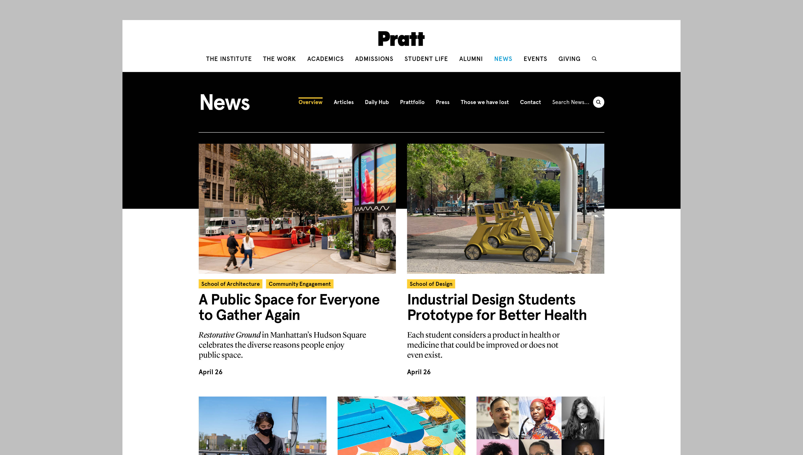
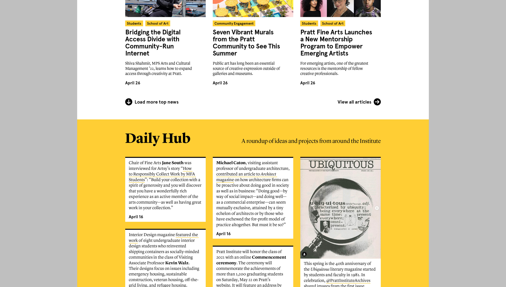
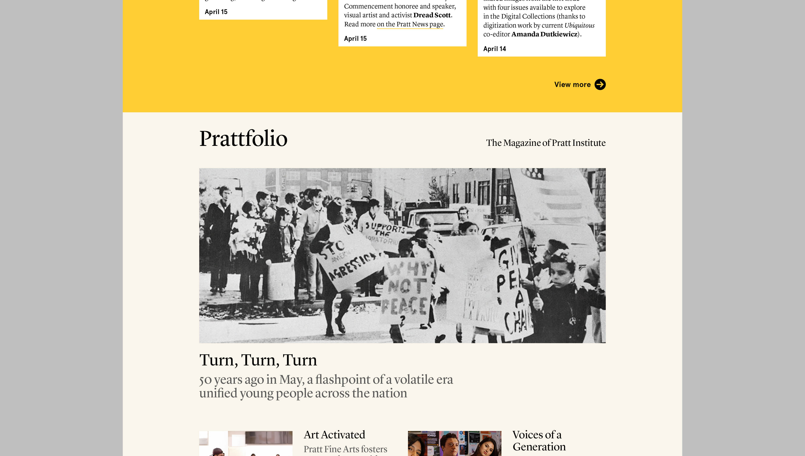
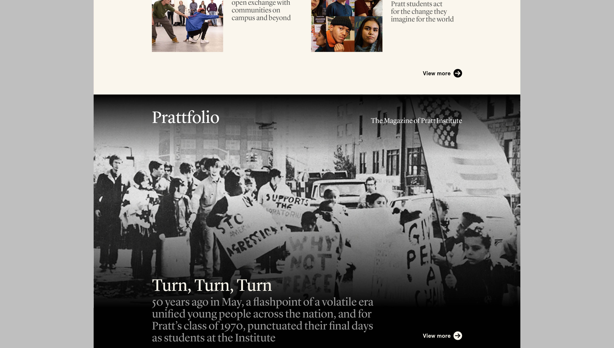
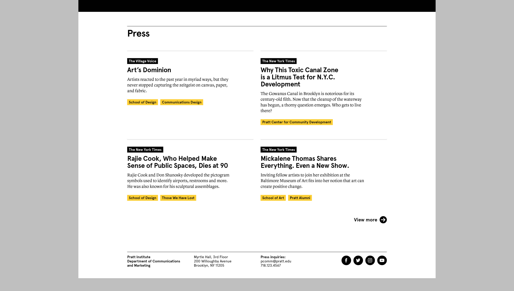
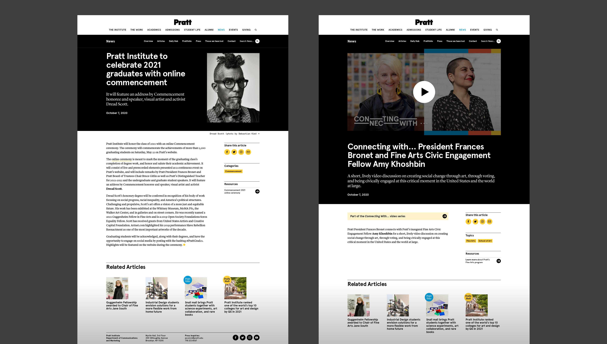
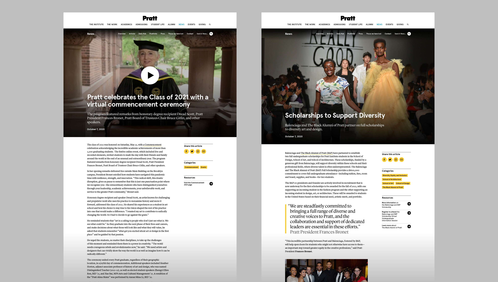
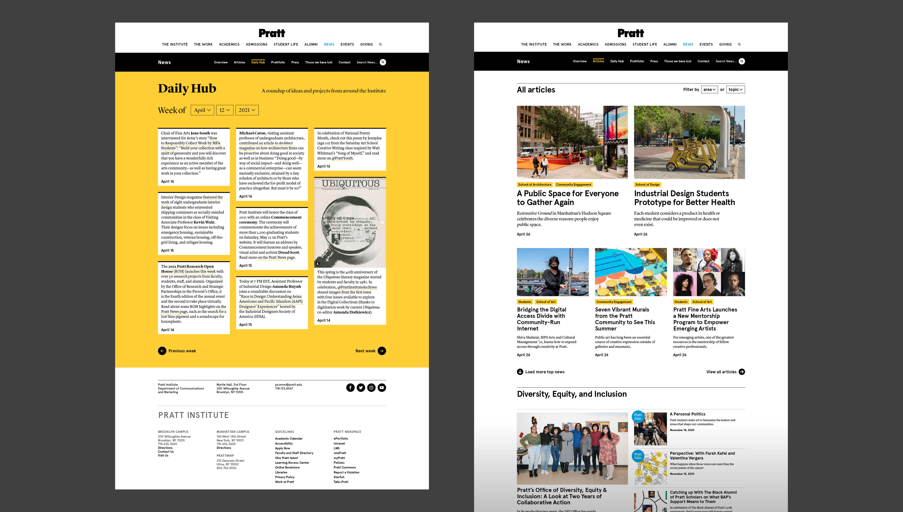
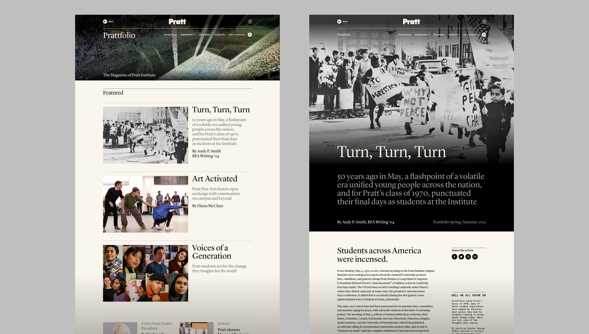
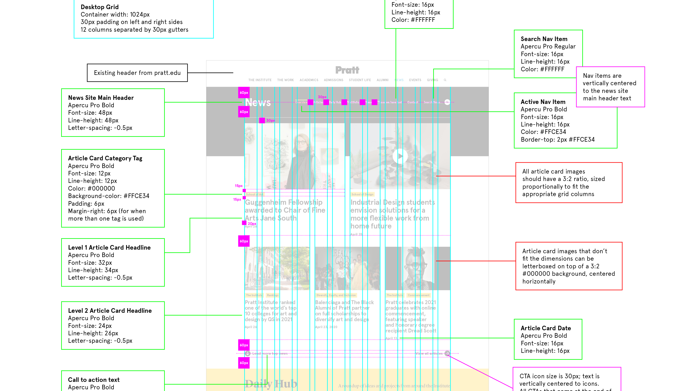

Several views of articles on the news subsite, including text and video examples. Different header treatments could be selected by the content manager, taking into consideration certain image owners’s wishes to not overlay text or crop artwork.
The “Related Articles” section featured colorful badges applied to the article images indicating their presence in a certain subsection of the site, such as the Daily Hub or Prattfolio.

A content-rich sidebar was a key component of the article pages. While it included standard elements such as social media sharing modules and category tags, one priority was to leverage the sidebar to tie in the rest of Pratt beyond the news subsite — a “Resources” section that could be customized to extend the content of each article.

As the news subsite was developed during the COVID pandemic, virtually all campus life and education took place online. The Daily Hub section of the subsite intended to foster a sense of dynamism and virtual community by featuring quick, rapid updates from around the Pratt campus.

Prattfolio, the campus magazine of Pratt Institute, was incorporated as a special section of the news subsite that more closely resembled the print magazine in look and feel. Digital Prattfolio articles were expanded to feature richer imagery and typography for a more immersive reading experience.

A comprehensive style guide was handed over to the Digital Communications team for production.